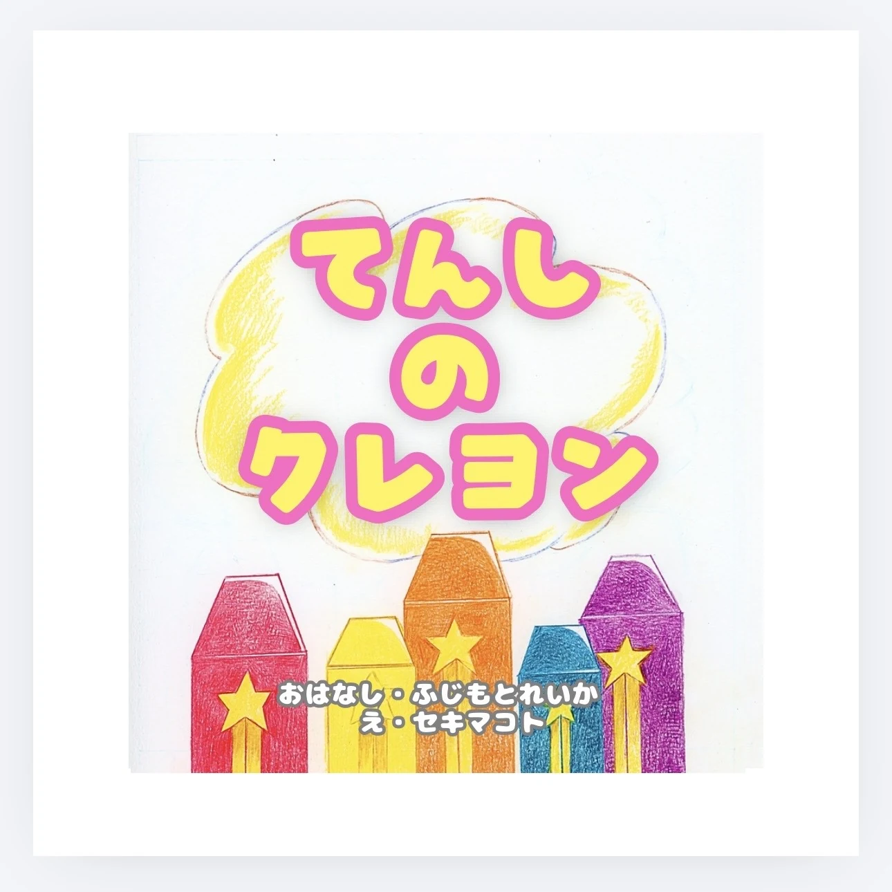
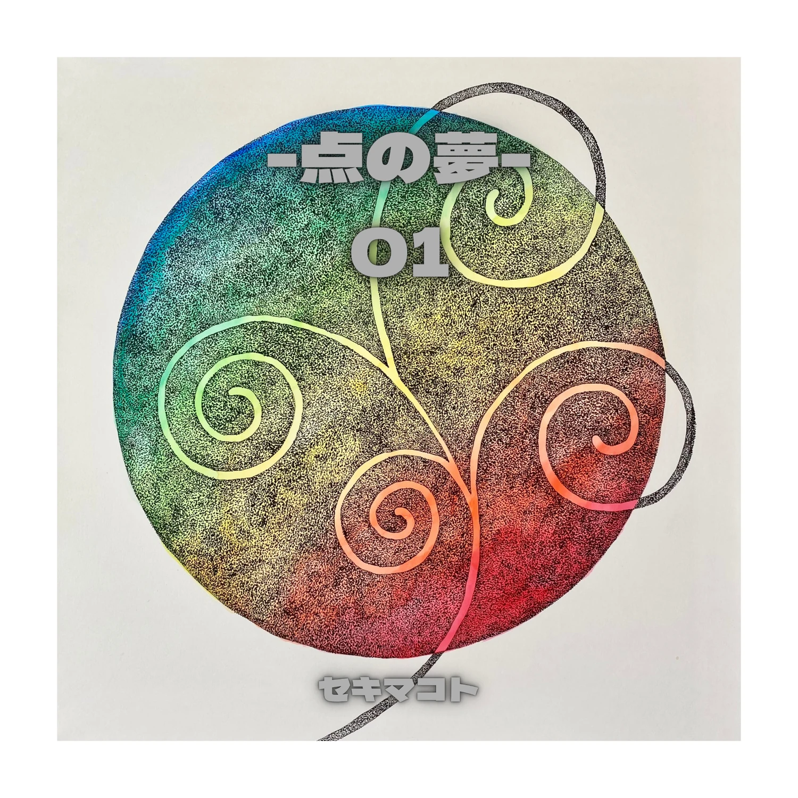
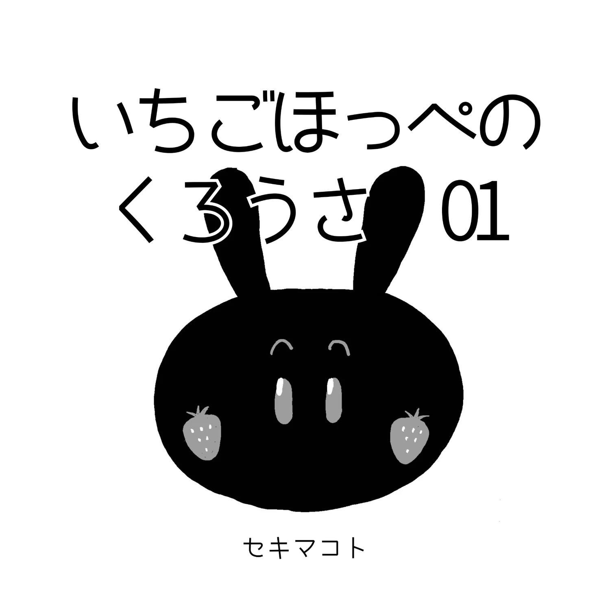

BOOKS
本の展示室
絵と物語を、一冊に。
これまでに生まれた本をご紹介します。

PICTURE BOOK · 2026
てんしのクレヨン
小さな天使は「みんなを笑顔にしたい」と願っていました。神さまからもらった不思議なクレヨンで、困っている人や動物たちを助けていく物語です。
小学生のころに書かれ、地域の人々に見守られてきたお話が、約10年の時を経て絵本になりました。

STIPPLING ART BOOK
点の夢 01
うさぎや抽象の世界を、小さな点の重なりで描いた作品集です。色と点の広がりを、ページの中でお楽しみください。

KUROUSA ART BOOK
いちごほっぺのくろうさ 01
モノクロの世界に暮らす、いちごほっぺのくろうさ。少しおかしくて、のんびりした毎日をまとめた作品集です。